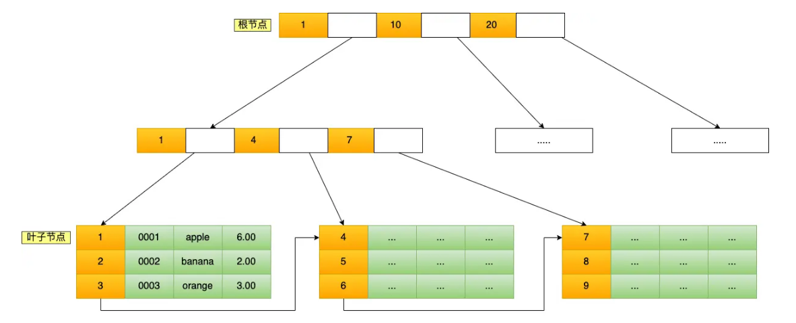
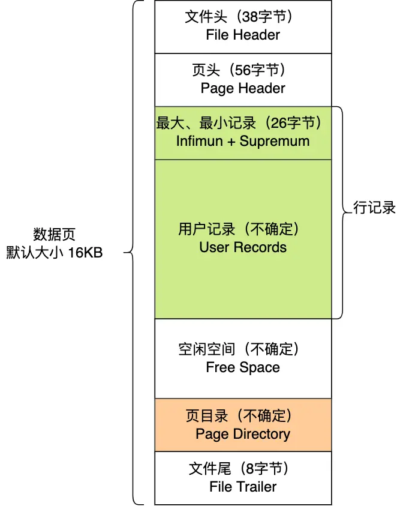
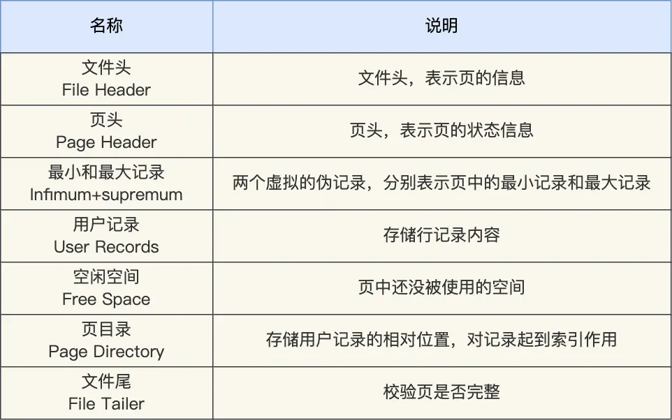
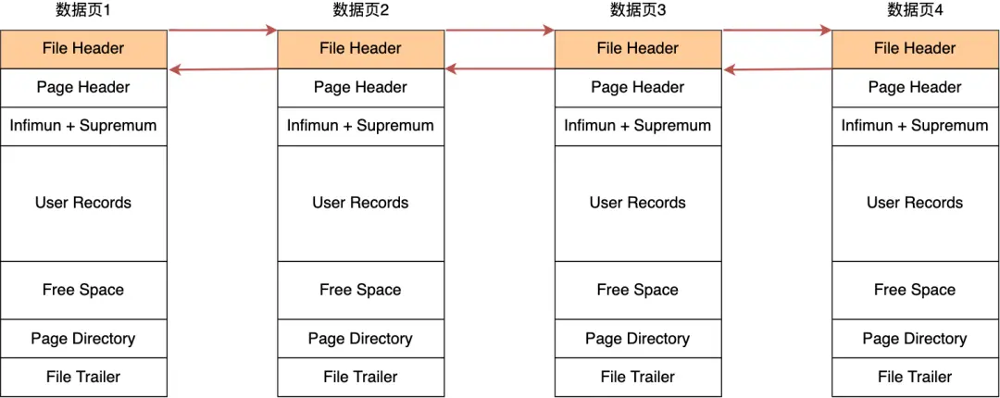

前言
计算机的本质是对数据的使用和存储。数据库是最常见的数据存储解决方案，将数据结构化的存储在硬盘、内存中，通过统一的接口查询或者修改数据（CRUD，Create、Query、Update、Delete）。对于海量数据，最重要的是快速找到需要使用数据的存储位置，并且可以方便的修改数据。数据的存储和使用涉及到非常多的问题，最近15年互联网繁荣的基础是建立在海量数据的处理业务上，因此数据库几乎囊括了大规模数据处理的计算机技术。操作系统原生虽然提供了基础的文件读写接口，但是它们无法应对海量数据和用户复杂的业务需求。对于系统原生的文件读写接口难以解决以下问题：
- 在文件中间部分新增或者删减数据，可能导致后面所有的文件内容进行偏移，数据库的数据结构可以解决该问题。
- 数据查找默认采用线性遍历，查询性能较弱。
- 多进程、多线程读写数据，需要自己实现锁。加锁粒度太大，性能差。
- 缺乏灵活访问控制权限机制，仅依靠系统文件权限
- 崩溃、备份与恢复问题，数据库对异常处理有成熟的方案
- 事务一致性，数据库提供了ACID事务，业务中经常存在多个步骤组合为一个复杂操作，其中某个步骤失败时，应该回到所有步骤执行前的状态
- 单机容量有限，数据需要分片到不同的服务器上
数据索引（Index）
索引是一种从键值（Key）到数据物理或逻辑位置（Pointer）的映射结构。它将原本可能需要全表扫描的查询，转变为一次高效的定向查找。通过以额外的存储空间和写入开销，换取读取性能的巨大提升。索引极大加速读取，但会拖慢写入（插入、删除、更新）操作。
常见的索引有B+树索引、哈希索引、倒排索引、空间索引等。
MySQL 的数据是持久化的，即索引和记录都保存在磁盘上，这样即使设备断电数据也不会丢失；由于内存访问是纳秒级、磁盘访问是毫秒级，读取同样大小的数据时磁盘比内存慢上万倍甚至几十万倍，而磁盘读写的最小单位是扇区（512B），操作系统一次会读写多个扇区，所以最小读写单位是块，Linux 中块大小为 4KB，一次磁盘 I/O 会读写 8 个扇区；因此，当通过磁盘上的索引查找某行数据时，需要先把索引从磁盘读入内存，再根据索引从磁盘找到并读入数据，这个过程中会发生多次磁盘 I/O，而 I/O 次数越多耗时越大，所以理想索引结构应能在尽可能少的磁盘 I/O 中完成查询；同时，MySQL 支持范围查找，因此索引结构不仅要能高效查询单条记录，还要能高效执行范围查找。
B+树（Blanced Plus Tree）
结构与特点

B+树是一种平衡多路搜索树，是关系型数据库中最常见的索引结构。它的核心特点：
- 所有数据都存储在叶子节点，非叶子节点只存储键值和指向子节点的指针。
- 叶子节点之间用链表连接，形成一个有序的双向链表。
- 树是平衡的，所有叶子节点深度相同，因此查询时间复杂度稳定在 O(log n)。
每个节点可以存储多个键值（通常为几百个），所以树的高度很低（3~4层就能索引上亿条数据）。
在数据用户视角，记录是按照行来操作的，但是数据库的读取并不以「行」为单位，否则一次读取（也就是一次 I/O 操作）只能处理一行数据，效率会非常低。InnoDB 的数据是按「数据页」为单位来读写的，意味着数据库每次读写都是以 16KB 为单位的，一次最少从磁盘中读取 16K 的内容到内存中，一次最少把内存中的 16K 内容刷新到磁盘中。
在数据页大小为16KB的前提下，MySQL中B+树的性能指标可以直接对应到不同数据量级下的树高度、磁盘I/O次数和查询延迟。

各个字段的作用如下：


采用链表的结构是让数据页之间不需要是物理上的连续的，而是逻辑上的连续。参考文献: [1] 图解mysql https://xiaolincoding.com/mysql/index/page.html
查询过程
等值查询。从根节点开始，逐层比较键值，直到叶子节点找到目标。
范围查询。先找到范围的起始键，然后沿叶子节点的链表顺序扫描。
B+树性能的核心指标
B+树的性能核心在于其“矮胖”结构。每个节点（数据页）默认为16KB，非叶子节点仅存储键值（如8字节的BIGINT）和指针（6字节），因此单页可容纳约1170个索引项。B+树的高度直接决定了查询时所需的磁盘I/O次数。
基于主键为BIGINT（8字节）、单行记录约1KB的理想场景，不同数据量级下的性能表现
| 数据量级 | B+树高度 | 理论最大行数 | 磁盘I/O次数 | 机械硬盘查询延迟 | SSD查询延迟 |
|---|---|---|---|---|---|
| 2万行以内 | 2层 | ~1.8万行 | 1~2次 | ~10-20ms | ~0.1-0.2ms |
| 百万级 | 3层 | ~2190万行 | 2~3次 | ~20-30ms | ~0.2-0.3ms |
| 千万级 | 3层 | ~2190万行 | 2~3次 | ~20-30ms | ~0.2-0.3ms |
| 千万到五千万 | 3~4层 | ~2190万行 ~ 256亿行 | 3~4次 | ~30-40ms | ~0.3-0.4ms |
| 亿级以上 | 4层 | ~256亿行 | 4次 | 40ms+ | 0.4ms+ |
数据说明：
- 查询延迟基于每次磁盘I/O约10ms（机械硬盘）或0.1ms（SSD）估算。
- 根节点常驻内存，因此实际磁盘I/O次数通常比树高度少1次。
- 以上为理想值，InnoDB默认的填充因子约为93.75%（innodb_fill_factor相关行为），页内保留约6.25%的空间用于后续插入，因此实际可存储的行数会低于理论值约6%~10%
- 若使用随机主键（如UUID），页分裂频率显著升高，实际容量可能进一步下降，写入性能也会受到明显影响。
常见索引应用场景
- MySQL 的 InnoDB 引擎默认使用 B+树索引。
- PostgreSQL 的 B-tree 索引。
- 几乎所有关系型数据库的主键索引、唯一索引、普通索引。
实际场景中Mysql数据库的B+树性能考量
数据量并非唯一标准：单行大小的具体影响
单行记录越大，叶子节点每页能存储的行数越少。以 InnoDB 的 16KB 页为例，扣除约 1/16 的页头、页目录等元数据后，约剩 15KB 用于存储行数据：
| 单行大小 | 每页可存行数（约） | 3层B+树容量（约） |
|---|---|---|
| 200字节（窄表：订单主表，仅id+user_id+status+amount+时间） | ~75行 | ~1.04亿行 |
| 1KB（中等表：订单+商品快照+收货地址+备注） | ~15行 | ~2100万行 |
| 4KB（宽表：日志表，含大量文本/JSON字段） | ~3~4行 | ~400~500万行 |
这意味着同一套硬件上，窄表在 5000 万行时可能仍是 3 层树，而宽表在 500 万行时就已经逼近 3 层的容量上限。阿里云 PolarDB-X 的分片建议中，标准场景（单行 ≤4KB）的单分片推荐行数为 500 万至 5000 万行，正是基于这一差异。
###Buffer Pool 的影响与“2000万行”经验值的来源
InnoDB 的 Buffer Pool 会缓存热点数据页。当数据量增长到索引体积超过 Buffer Pool 可容纳的范围时，原本驻留内存的上层节点被迫换出，查询需要重新走完整的磁盘 I/O 路径，性能出现陡降。
以一台 Buffer Pool 配置为 12GB 的实例为例：3 层 B+ 树的非叶子节点总大小约为 1170² × 14字节 ≈ 19MB，远小于 12GB，因此索引的上两层可以完全常驻内存。但当树高从 3 层变为 4 层时，索引体积增长到约 22GB，超过 Buffer Pool 容量，部分非叶子节点不得不从磁盘读取，主键查询的 I/O 次数从 2~3 次增加到 3~4 次，延迟可能出现数倍增长。这就是“单表 2000 万行性能下降”经验值的核心来源，其本质是树高跃迁导致索引工作集超出内存，而非 2000 万这个数字本身有什么魔力。
TPS/QPS 接近单库承载上限的具体实例
TPS（Transactions Per Second，每秒事务数）：衡量系统每秒能完成多少个“事务”。事务是一个逻辑工作单元，通常满足 ACID，可能包含多条 SQL 或多次操作，要么全部成功，要么全部失败。 QPS（Queries Per Second，每秒查询数）：衡量系统每秒能处理多少个“查询/请求”。在数据库语境中，通常指每秒执行的 SQL 语句数；在 Web 语境中，常指每秒 HTTP 请求数。
根据华为云 RDS for MySQL 的压力测试数据，不同规格实例的 TPS/QPS 上限差异显著：
| 实例规格 | 最大连接数 | TPS | QPS |
|---|---|---|---|
| 2核 8GB | 2,000 | 495 | 9,918 |
| 4核 16GB | 4,000 | 1,020 | 20,404 |
| 8核 32GB | 8,000 | 2,017 | 40,342 |
| 16核 64GB | 14,400 | 2,896 | 57,938 |
数据来源：华为云 RDS for MySQL 5.7 性能白皮书（vCPU:Memory = 1:2）
以 4核 16GB 规格为例，其 TPS 上限约 1,020，QPS 上限约 20,404。当业务的实际写入 TPS 持续达到 800~900（接近上限的 80%~90%）时，事务排队延迟开始显著上升，表现为接口响应时间从 P99 的 50ms 攀升到 200ms 以上。典型场景包括：
- 电商秒杀：单表订单量每秒新增 2,000+ 行，写入集中在同一自增主键的末尾页，导致页锁竞争。某案例中 QPS 从 3,000 飙升至 8,000，应用层横向扩容后数据库反而先扛不住，根因是自增主键的写入热点全部落在最后一个数据页上。
- 社交动态写入：用户动态表每秒写入 5,000+ 行，如果存在多个二级索引（如按用户 ID、按时间排序），每次 INSERT 需要同步维护 3~4 棵 B+ 树，实际 I/O 放大 3~4 倍，TPS 上限进一步压缩。
- 读多写少但查询模式复杂：日活 120 万的 App，订单表 QPS 达到 8,000，其中包含大量按非索引字段的模糊查询或范围扫描，每次查询扫描的行数远超预期，Buffer Pool 命中率下降，IOPS 成为瓶颈。
阿里巴巴《Java 开发手册》分表建议
阿里巴巴《Java 开发手册》规定：
“单表行数超过 500 万行或者单表容量超过 2GB，才推荐进行分库分表。说明：如果预计三年后的数据量根本达不到这个级别，请不要在创建表时就分库分表。”
500 万行是行数维度的参考线，2GB 是容量维度的参考线。例如，一张日志表虽然只有 300 万行，但如果每行平均 5KB（含堆栈信息和 JSON 负载），总容量已达 1.5GB，接近 2GB 阈值，查询时索引扫描的 I/O 开销已经很明显。低于 500 万行且低于 2GB 时，优先通过索引优化、读写分离、缓存来解决。手册提醒预计三年后的数据量达不到这个级别，不要提前分表。分库分表带来的运维复杂度（跨片 JOIN、分布式事务、全局 ID、扩容迁移）是实打实的成本，过早拆分是典型的过度设计。一个日增 5,000 行的业务，一年增长约 180 万行，三年约 550 万行，恰好在临界点附近，此时可以暂不分表，先观察增长趋势和查询性能变化。
实际决策需结合单行大小、查询模式、硬件配置综合判断
单行大小决定了“行数阈值”应该定在多少。同样是 500 万行，200 字节的窄表和 4KB 的宽表，总容量相差 20 倍，B+ 树叶子节点的页数也相差 20 倍。阿里云 PolarDB-X 的建议是：单行 ≤4KB 时单分片承载 500 万~5000 万行；单行更大时，分片行数应相应降低。
查询模式决定了分表的紧迫性和分片键的选择。以电商订单为例：如果核心查询是“买家查看自己的订单列表”（WHERE buyer_id = ?），那么按 buyer_id 分片后，单条查询精确路由到一个分片，分表收益显著。但如果业务同时需要“商家查看店铺订单”（WHERE seller_id = ?），仅按 buyer_id 分片就会导致商家查询需要扫描全部分片，此时需要引入异构索引表或基因法来支持多维度查询。反之，如果订单表的核心查询是“按订单号精确查找”（WHERE order_id = ?），即使数据量达到 5000 万，只要 order_id 有唯一索引且 Buffer Pool 足够大，单表查询仍然能在 10ms 以内完成，分表的必要性就大大降低。
硬件配置直接决定临界点的位置。同样是 5000 万行的订单表：
- 在 NVMe SSD + 64GB Buffer Pool 的实例上，索引工作集可以完全常驻内存，查询延迟稳定在 1~2ms，无需分表。
- 在 机械硬盘 + 8GB Buffer Pool 的实例上，索引工作集超出内存，每次查询需要 3~4 次磁盘 I/O，延迟飙升到 50ms 以上，分表的收益立即显现。
一个具体的决策矩阵可以参考：
| 条件组合 | 建议 |
|---|---|
| 单行≤500字节，≤2000万行，SSD，查询走主键或唯一索引 | 不分表，索引优化即可 |
| 单行≤500字节，>2000万行，Buffer Pool有限 | 评估分表，优先考虑按查询维度分片 |
| 单行>2KB，>500万行，存在多维度查询 | 尽早分表，同时引入异构索引 |
| 单行≤500字节，≤500万行，但QPS持续>8000 | 读写分离 + 缓存，数据库层面先优化连接池和慢查询 |
分表结论
性能衰退的感知阈值：单表 2000 万行左右，B+ 树从 3 层跃迁到 4 层的概率显著增加，索引工作集开始超出典型 Buffer Pool 容量，查询延迟可能出现明显波动。
架构改造的推荐阈值：阿里巴巴《Java 开发手册》的 500 万行或 2GB，这是一个经过业务实践验证的保守参考线。实践操作中，当单表数据量超过 5000 万行，或 TPS 接近单库规格上限的 80%（如 4核16GB 实例的写入 TPS 超过 800），分库分表的收益开始明显超过其架构成本。
必须分表的硬性阈值：单表文件大小超过 50GB（SSD 环境可放宽至 100GB），或单实例 QPS 持续超过 8000、纯写 TPS 超过 3000。
哈希索引
结构与特点
哈希索引基于哈希表实现。它通过哈希函数将索引键映射到一个固定大小的桶（bucket）数组。每个桶中存储指向数据行的指针或链表。
等值查询。计算键的哈希值，直接定位到桶，时间复杂度接近 O(1)。
哈希冲突。和普通哈希表处理方式一致，由于不同键可能映射到同一个桶，通常用链表或开放寻址法解决。
常见应用场景
- 内存数据库：Redis、Memcached 的键值查询。
- MySQL 的 MEMORY 引擎：支持哈希索引。
- 自适应哈希索引：InnoDB 会自动为频繁访问的页建立哈希索引，加速等值查询。
- 缓存系统：根据 Session ID、用户 Token 快速查找。
倒排索引
结构原理
倒排索引是全文检索的核心数据结构。它的思路与正向索引相反：
正向索引：文档 → 包含的词。
倒排索引：词 → 包含该词的文档列表（称为 Posting List）。
一个典型的倒排索引包含：
词典（Term Dictionary）：所有出现过的词，通常用 B+树或哈希表存储。
倒排列表（Posting List）：每个词对应的文档 ID 列表，还可以包含词频、位置等信息。
位置信息：用于短语搜索、邻近搜索。
查询过程
单词查询：在词典中找到词，取出倒排列表，得到文档集合。
布尔查询：对多个词的倒排列表进行交集、并集、差集运算。
短语查询：利用位置信息检查词是否相邻。
相关性排序：根据 TF-IDF、BM25 等算法计算文档得分。
常见应用场景
- 搜索引擎：Google、Bing、百度。
- Elasticsearch / Solr：基于 Lucene 的倒排索引。
- 日志分析：Splunk、ELK Stack。
- 文档管理系统：全文检索。
- 数据库全文索引：MySQL 的 FULLTEXT 索引
数据库分页问题
分页查询中，LIMIT offset, size 是最常见的写法，但它存在一个天然的性能陷阱：offset 越大，查询越慢。原因在于，数据库并不会“直接跳到第 offset 行”，而是必须先扫描 offset + size 条记录，再丢弃前 offset 条，最后返回剩余的 size 条。即使 ORDER BY 字段上有索引，B+ 树也只能帮助快速定位起始键，无法 O(1) 地跳过大量叶子节点。因此，LIMIT 0, 10 可能只扫描 10 行，而 LIMIT 1000000, 10 却要扫描 100 万零 10 行，代价相差数万倍。
当 offset 大到一定程度，例如几十万、上百万，就进入了深度分页场景。深度分页不仅是 MySQL 的问题，在 Elasticsearch（ES）中同样严重。ES 是分布式的，from + size 查询会把 from + size 条数据下发到每个分片，各分片返回候选集后，再由协调节点进行全局排序和截断。这意味着分片越多、from + size 越大，内存、CPU 和网络开销都会被成倍放大。ES 默认的 max_result_window 为 10000，超过就会直接报错，本质上也是为了保护集群不被深度分页拖垮。
针对深度分页，常见的技术方案有几种：
| 方案 | 适用场景 | 优点 | 缺点 |
|---|---|---|---|
LIMIT offset, size |
小数据量、需要跳页 | 写法简单，支持随机跳页 | offset 大时扫描行数线性增长 |
| 游标分页 | MySQL 大数据量、顺序翻页 | 用 WHERE id > last_id LIMIT size 避免 offset 扫描 |
不能跳页，依赖有序唯一键 |
| 延迟关联 | MySQL 需要 offset 跳页且索引可覆盖 | 先在索引上取主键，再回表取完整数据，减少回表次数 | 仍需扫描 offset 行，只是回表成本降低 |
ES search_after |
ES 深分页、顺序翻页 | 基于上一页最后一条的排序值定位，避免全局排序 | 不能跳页，需要稳定且唯一的排序字段 |
ES scroll |
数据导出、全量遍历 | 快照式遍历，适合离线任务 | 非实时，占用资源，不适合在线分页 |
但技术手段只能缓解，不能根治。遇到深度分页时，更应先思考原始需求：用户真的需要翻到第 10000 页吗？ 大多数业务场景下，用户只会看前几页，或者通过筛选条件缩小结果集。因此，产品层面可以限制最大页数（例如只允许翻前 100 页），或改用无限滚动、分批加载。开发者也应主动影响产品经理，避免设计出“必须支持任意深度跳页”的伪需求。
当然，如果数据量很小，例如只有 1k 量级，且长期不会大幅增长，那么 LIMIT offset, size 完全够用，简单直接，维护成本最低。此时强行引入游标分页或 search_after 反而是过度设计。
总结：分页问题的本质是“数据库无法低成本跳过大量行”。小数据量下，LIMIT offset, size 简单有效；大数据量下，应优先从业务侧限制深度翻页，技术侧用游标分页、延迟关联或 ES search_after 替代大 offset 查询。核心原则是：能不深分页就不深分页，能简单就不复杂。
事务处理
数据库提供 ACID 事务：
原子性 (Atomicity)：要么全做，要么全不做
一致性 (Consistency)：事务前后数据满足约束
隔离性 (Isolation)：并发事务互不干扰
持久性 (Durability)：提交后的数据不会丢失
数据库通过 WAL（预写日志） 等机制，保证即使系统崩溃，重启后也能恢复到一致状态。 其中，持久性是通过 redo log （重做日志）来保证的；原子性是通过 undo log（回滚日志） 来保证的；隔离性是通过 MVCC（多版本并发控制） 或锁机制来保证的；一致性则是通过持久性、原子性、隔离性来保证。
并发控制-MVCC
MVCC（Multi-Version Concurrency Control，多版本并发控制）是一种数据库并发控制思想。它的核心是：保存数据的多个历史版本，让读操作读取某个“快照版本”，而不是直接读最新数据，从而做到读写互不阻塞，提高并发性能。 通过 undo log 保存历史版本，通过事务 ID 和 Read View 判断可见性，让读操作读快照、写操作建新版本，从而实现高并发的一致性读。在 MySQL InnoDB 中，它是 RC 和 RR 隔离级别的重要基础。
1. 核心思想
普通锁机制中，读和写往往互相阻塞。MVCC 通过“版本”解决：
- 写操作：不直接覆盖旧数据，而是生成一个新版本，旧版本保留。
- 读操作：根据事务的可见性规则，读取它能看到的那个版本。
- 因此：读不加锁，写不阻塞读，读也不阻塞写。
但要注意：MVCC 主要解决“读写冲突”，写写冲突仍然要靠锁。
2. MySQL InnoDB 中的实现
InnoDB 的 MVCC 主要依赖三部分：
2.1 隐藏字段与 undo log
InnoDB 每行记录有两个重要隐藏字段：
DB_TRX_ID：最近修改该行的事务 ID。DB_ROLL_PTR：回滚指针，指向 undo log 中的旧版本。
每次更新数据时：
- 旧版本写入 undo log。
- 新版本写入聚簇索引。
- 新记录的
DB_ROLL_PTR指向 undo log 中的旧版本。
多个旧版本通过回滚指针串成一条版本链。
2.2 Read View
事务进行“快照读”时，会生成一个 Read View，用来判断版本链中哪个版本可见。Read View 主要包含：
m_ids：当前活跃但未提交的事务 ID 列表。min_trx_id：活跃事务中最小的事务 ID。max_trx_id：下一个将要分配的事务 ID。creator_trx_id：当前事务自己的 ID。
2.3 可见性判断
沿着版本链从最新到最旧找，对每个版本的 DB_TRX_ID 判断：
- 如果等于当前事务 ID：可见，自己的修改自己能看见。
- 如果小于
min_trx_id：可见，说明在 Read View 生成前已提交。 - 如果大于等于
max_trx_id：不可见，说明是 Read View 生成后开启的事务。 - 如果在
m_ids中：不可见，说明当时还未提交。 - 否则：可见，说明已提交。
找到第一个可见版本并返回。
3. 快照读与当前读
MVCC 主要作用于“快照读”。
- 快照读：普通
SELECT，不加锁，读取 Read View 可见的历史版本。 - 当前读：
SELECT ... FOR UPDATE、SELECT ... LOCK IN SHARE MODE、UPDATE、DELETE、INSERT，读取最新版本并加锁。
4. RC 与 RR 的区别
MySQL 默认隔离级别是 RR，即 Repeatable Read。
- RC，Read Committed：每次快照读都生成新的 Read View，所以能看到其他事务已提交的最新数据。
- RR，Repeatable Read：事务第一次快照读时生成 Read View，之后复用，因此同一事务内多次读取结果一致。
- RR 下，快照读避免幻读；当前读通过 next-key lock 等机制进一步防幻读。
5. 优缺点
优点：
- 读写不阻塞，并发性能高。
- 读操作不加锁，减少锁竞争。
- 能实现一致性读和可重复读。
- 避免脏读，提升事务隔离性。
缺点：
- 需要保存旧版本，undo log 可能膨胀。
- 长事务会导致版本链过长，purge 无法及时清理。
- 实现复杂，快照读可能读到旧数据。
- 不能解决写写冲突。